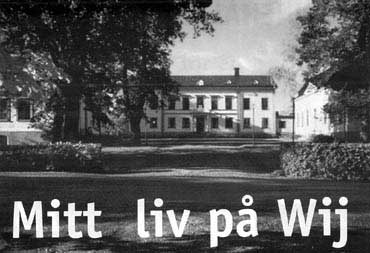
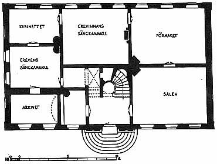
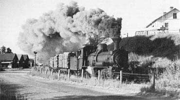

Mitt liv på Wij
Fritt ur minnet av Kjell Söderström

I början av 1950-talet var det lätt att
få ett arbete när den 7-åriga folkskolan
hade avslutats och ambitionsnivån var låg för att studera vidare på
realskolan,
som då var belägen i ett av hyreshusen efter nuvarande Järnvägsgatan här
i
Ockelbo.
Efter skolan började jag med
skogsplantering vid Mörtebovägen under
sommaren och sedan blev det Bergkvists Handelsträdgård med julhandeln
och blomsterutkörningen som blev höjdpunkten på min trädgårds- och
blomsterbana.
Björksågen som låg inom Marstrandsområdet
(Smältvägen) blev en arbetsplats
under några månader med matlåda. Här kom jag i kontakt med kärnmjölk
för
första gången, som enligt min mamma inte var något för en kille som växte.
"Lilla Ugglebo" eller Ugglebo
Sundsbron blev platsen där "springpojken" skaffade
sig nya livserfarenheter med företagets paketcykel och släpkärra.
I början av år 1952 träffade jag
Kopparfors AB´s postbud Sven Olov Olsson
på posten och fick frågan, om jag ville börja som postbud efter honom,
för
han skulle sluta.
Postens lokaler fanns då i det sk Rosa
Huset med ingång mitt på den norra
långsidan. "Posthuset" innehöll på första våningen posten
med hall innanför
ytterdörrarna där postfacken fanns. Till höger var själva
postexpeditionen
med lång disk till vänster. Längre fram till höger mot hörnet fanns
skrivpulpeter,
bakom expeditionen - mot söder- postsorteringen med in- och utgång på
husets västra gavel.
Innanför dörren till vänster ute i hallen var postmästarens rum.
Under postens lokaler låg Sundbergs
bageri med ingång från öster eller mot
"Kråkstation". Ingången till lägenheterna ovanför posten
fanns på södra
långsidan "inne på gården".
På frågan jag fick före beskrivningen
av "Posthuset" blev svaret ja, och efter
några dagar klev en ung pojke på 14 år in genom dörrarna till den vänstra
flygeln vid Wij Herrgård, Huvudkontoret för Kopparfors AB, och frågade
efter
kontorschefen Lindqvist.
Efter en försiktig knackning på dörren
till kontorschefens rum gick jag in och
fick frågan: "Vem är Du då ?"
Jag talade om vad jag hette och att jag sökte platsen som postbud. Efter
svar
på fråga vad min pappa hette och ett jakande svar på att det var
"Söderström
på Sjukkassan" så var anställningen klar.
Den 25 februari 1952 blev min första
arbetsdag som postbud vid Kopparfors
AB´s Huvudkontor i den södra flygeln från år 1787.

Södra flygeln, bostadsflygeln, användes
fram till 1842 som säteriets
huvudbyggnad, den gamla huvudbyggnaden från 1680-talet stod
oanvänd och revs för att ge plats åt nuvarande huvudbyggnad åren
1839-1842.
Kopparbergs och Hofors Sågverks AB förvärvade
Ockelboverken år 1887
och flyttade kontoret från Stockholm till Ockelbo och Wij 1903. År 1937
ändrades namnet till Kopparfors Aktiebolag.
Du och jag förflyttar oss nu tillbaka i
tiden till 1950-talets början och in i
14-åringe Kjell Söderströms unga liv som postbud vid Kopparfors AB.
De första dagarna gällde det att hitta
i denna nya främmande och
spännande arbetsmiljö med många rum och människor där tilltalet är
herr eller fröken före efternamnet, veta namnen på alla människor
som finns i de olika husen och rummen så att posten kommer till rätt
avdelning och rätt person.
Wij herrgård består av själva herrgårdsbyggnaden
där disponenten Sigbjörn
Holgersson bor med sin familj, två flyglar, den vänstra (södra flygeln)
som
inrymmer på nedre botten till vänster innanför ytterdörren kartong-
försäljningen där Lennart Frölich och Ove Skoglund sitter i ett litet
rum.
Till höger från ytterdörren kommer träavdelningen i ett större rum
med Nils
Rylander och Willy Carlsson som sitter mitt emot varandra vid var sitt
skrivbord och ett tredje ställt mot gavlarna på de två övriga, Willy
med
ryggen mot dörren. Kontorschefen John Lindqvist har eget rum liksom
försäljningschefen Manne Wallerström längs efter gaveln. Mitt emot
Wallerströms rum finns försäljningen av cellulosa och lådor. Sixten
Nordenfors
och Kjell Persson har "massa"-försäljningen medan Sven Wingård
är ansvarig
för lådorna.
(I detta rum skulle jag komma att tillbringa många timmar framför
hyllorna
med pärmar som hade etiketter A-Ö).
Hyllorna finns i skåp med skjutbara luckor. I pärmarna insorterades såväl
inkommande som utgående post i bokstavsordning.
Vi fortsätter vidare till Disponentens
rum, ett stort rum med tre fönster mot
Wij Valsverk, Wij dammen och Wij bruk. En stor lampa hänger från taket
med
en lysdel uppe vid taket och två lysdelar i vardera änden av nederdelen
för
att ge bra belysning över det stora bord som tillsammans med lampan
dominerar rummet. Lampans konstruktion är som ett upp- och nedvänt T.
Disponentens arbetsplats är vid bordets
bortre kortända, där det varje morgon
skall finnas välformerade blyertspennor i ett ställ av glas. Skrivbordet
har bred
träram med grön filtbeklädnad, stora tavlor med personporträtt hänger
på
väggarna. Ytterligare tre rum mot norr, i det nordligaste hörnrummet
sitter
Gunvor Carlsson och Märit Jäderberg .
I trappan upp till andra våningen finns
nischer och "där uppe" ett trappräcke i
smide. Till vänster ovanför trappan är postrummet som är min
arbetsplats
tillsammans med Ragnar Björklund. Innanför "postrummet" finns
kamrerens rum,
Folke Nordenfors; detta är nu ekonomiavdelningen, där Gunde Jansson
sitter
vid skrivbordet i hörnrummet. Därefter kommer två större rum där
Sigrid
Gunnarsson och Olle Åkerlund hanterar reskontran i det ena rummet, medan
kassören Henry Grundström finns i det andra.
Vi återvänder till platsen där trappan
kommer upp och går till höger och
knackar på dörren rakt fram, öppnar och kommer då till ett staket med
grind
och innanför detta finns kassören Henry Grundström bland höga
skrivpulpetrar
med tillhörande stolar. På staketet finns skrivplats där lönen hämtades
kontant
varje månad i ett brunt kuvert med redovisning på avlång lista. Min första
lön
blev 8:50 kr per dag.
I det stora rummet mot norr sitter Gustaf
Hånell och Joel Nordenfors. I rummet
därefter –ett litet hörnrum- finns Hilbert Norringe och där innanför
valvet.
I mitten av alla dessa rum finns telefonväxeln
med telefonisterna Ingrid Åberg
och Ulla Bergkvist. "Telefonrummet" har fyra väggar varav två
är av glas och
vetter mot Sigrid Gunnarssons och Olle Åkerlunds arbetsplatser.
I den norra flygeln, från 1880-1890, där
tidigare "köksflygeln" fanns från
mitten av 1600-talet men revs och ersattes av ny "köksflygel"
omkring år
1770, vilken i sin tur revs i slutet av 1800-talet då den nuvarande
byggnaden
uppfördes för att få två identiskt lika flyglar.
På nedre botten finns
ombudsmannaavdelnigen med notarie Roland Alvin och
hans medarbetare Bengt Krevers och Jan-Erik Hedlund. Här finns stora
utrymmen för kart- och förvärvshandlingar samt arkivlokal för ekonomi,
försäljning med flera avdelningar.
I kartrummet finns järnhyllor från golv
till tak och här är det högt till taket
- 3,5 meter. Stora stegar finns uppställda för att vara till hjälp när
kartor
längst upp under taket skall hämtas. Mitt i rummet ett stort
avlastningsbord
av järn.
Arkivrummen har golv av stenplattor och fönster med järnluckor.
På andra våningen finns
skogsavdelningen med skogschef Gösta Wiman samt
Nils Arsander, Gunnar Wiklund, Bertil Hagman, Per R Persson och Stig Gränge.
I den sk Mejeribyggnaden eller gårdslängan
från 1840-50-talet bor familjerna
Ernst "Pua" Åberg, Johan Jonsson och Helge Lundahl .
Ytterligare finns ett
antal uthyrningsrum på övervåningen där namnet "finska
himlen" är bekant.
Innan byggnaden gav plats för bostäder var här uthusbyggnad och mejeri
till
den ladugård som var belägen på den plats Bruksmässen nu finns. I början
på
1900-talet flyttades ladugårdens verksamhet till Raboområdet.
Bruksmässen med föreståndarinnan
Gunborg Magnusson med personal håller
full mathållning till de tjänstemän som bor på brukshushållet –
frukost, lunch,
middag - söndag som vardag utöver affärsluncher och middagar.
Föreståndarinnan och några av personalen bor på Bruksmässen.
Föreståndarinnans rum i anslutning till köket, medan personalen har
sina rum
längst upp under takåsarna.
Bruksmässen byggdes 1904 till bostad åt förvaltaren vid Linghed sågverk
i
Dalarna men flyttades till nuvarande plats år 1916.
Nu återvänder vi till nutid och min berättelse fortsätter.
Det blev många cykelturer genom Ockelbo
samhälle när post skulle förmedlas
från Wij till skogskontoret som hade sina lokaler i Norra Samhället vid
Bysjöns
strand med nuvarande gatuadress Garvargränd.
Det blev ofta en paus inne på "Kråkstationen",
expeditionen, tillsammans med
Evert Hult, Albert Axlund och en bulle från Sundbergs bageri.
Stationshuset "Kråkstation" var beläget straxt öster om det
sk Rosa Huset.
Hade jag tur kunde jag få hjälpa till med att veva upp eller ner
bommarna.
De bommar som skulle fällas och vevas upp fanns vid fyra övergångar
(järnvägen korsade landsväg)
SJ´s godsmagasin, Sundsbron, söder och norr om Fribergs Kiosk.
Med stor spänning sågs och hördes det
stora frustande Malletloket med sina
många timmervagnar på väg till Norrsundet. En stark upplevelse var också
att
få inandas stenkolsröken som har en fascinerande doft.

Foto juli 1959, Kurt Möller
Wij stationsområde hade ett omfattande
spårsystem som klarade både den
smalspåriga delen (891 mm) och SJ-spårbredd.
Den smalspåriga järnvägen DONJ (Dala - Ockelbo - Norrsundets Järnväg
) gick
genom samhället, där nu nya genomfarten finns med gång– och cykelvägen
från Sundsbron till Friberg Kiosk.
Postturen till kontoret vid Wij ladugård
kunde vara mycket spännande på
sommaren. På åkrarna som då fanns, efter nuvarande Ringvägen och östra
delen av Brömsvägen, kunde det stå stora tjurar och beta.
Ibland hade de kommit lösa och stod mitt
på vägen och tittade på de som
kom gående eller åkande.
En av höjdpunkterna, i ett postbuds liv,
var när alla julkort och paket skulle
skickas iväg. Då gällde inte cykel utan då beställdes det bil från
droskstationen.
En av de "mörkare sidorna" i
postbudets liv var när ett större antal original
skulle kopieras.
Under trappen till övervåningen i Norra flygeln fanns ett litet rum som
iordningställts för kopiering. I detta rum framtogs kopior enligt följande
arbetsschema. Originalet tillsammans med ett fotopapper belystes i en
speciell ljuslåda i ett visst antal sekunder beroende på hur originalet
såg ut,
det belysta fotopapperet lades med rätt sida mot ett nytt fotopapper för
att
tillsammans genomgå ett vätskebad med efterföljande torkning. I taket hängde
linor där kopian hängdes upp för torkning. Ett ensamt och tidsödande
arbete i
röd belysning.
Arbetstiden var 7 dagar i veckan –
heldag måndag-fredag, halvdag lördag
samt söndag morgon till posten och in genom bakdörren för att komma
till
postsorteringsrummet och hämta tidningarna.
Det var Dagens Nyheter, Svenska Dagbladet och Göteborgs Handels- och
Sjöfartstidning som skulle finnas på kontoret när kontorschefen kom.
Med tiden så blev arbetsuppgifterna förändrade
och nya arbetsuppgifter blev
verklighet.
I slutet på 1950-talet erhöll jag förflyttning
från postavdelningen till
Ombudsmannaavdelningen eller Arkivet som sedermera blev fastighets-
avdelningen. Här övergick arbetsuppgifterna till att skriva ut kontrakt,
registrera köp- som försäljningshandlingar, lantmäteriakter mm.
Kom nu i kontakt med lagstiftningens text och dess tolkningar.
En intressant och spännande period där
företagets synpunkter fick förklaras
vid olika lantmäteriförrättningar och informationsmöten, exempelvis förslag
till
ny sträckning av vägen till Åmot norr om Ockelbo.
Genom min funktion som handläggare i
"Marcus Wallenbergs Stiftelse av år
1969" hade jag förmånen att få träffa Marcus Wallenberg vid ett
antal tillfällen
när "Stiftelsen" hade sina årliga sammanträden i Stockholm.
MW, en engagerande person som var intresserad av de små detaljerna i
Stiftelsens verksamhet för de anställdas bästa.
Stiftelsens huvudsakliga uppgift var att ordna motionsaktiviteter och
stuguthyrning.
Med ett intresse för fackliga frågor
gick jag med i SIF:s (Svenska Industri-
tjänstemannaförbundet) lokalklubb vid Kopparfors AB och blev dess
sekreterare.
Händelser som är milstolpar i mitt liv
här på kontoret har blivit många under
alla dessa år.
En milstolpe är när informationen kom
1975 den 24 november att styrelserna
för Kopparfors AB och AB Papyrus hade beslutat föreslå aktieägarna om
ett
samgående där Kopparfors skulle leva vidare som ett helägt dotterbolag
till
AB Papyrus.
Vi var många som inte visste vad Papyrus var för ett företag, hade
aldrig hört
talas om detta bolag.
Ny chef kom med stora ambitioner till förändring
men tack vare hans felaktiga
taktik klarade "facken" av motståndet, så de förändringar
som skedde inom
kontorets väggar blev inte så dramatiska.
Den största förändringen var att
kartongförsäljningen flyttade till Fors.
Som kompensation för detta inrättades en central inköpsavdelning.
Under slutet på 1970-talet till mitten
av 1980-talet var det många chefer,
- vd:are - , som kom och gick, sju (7) stycken under en 10-årsperiod.
I SIF-arbetet ingick bl a förhandlingar
med företaget och jag minns särskilt
den förhandling som skedde torsdagen den 29 september 1986. Klockan 09.00
sammanträdde kommittén för förnyelsefonden inom Kopparfors AB med
huvud-
punkt att diskutera ett utbildningsavtal där både facken och Kopparfors
hade
lämnat förslag.
Vi inom facken ville komplettera avtalet
med en mening: "Vid en eventuell
fusion skall fondmedel ligga kvar hos KAB:s anställda och dess
verksamhets-
område". Detta ansåg företrädaren för Kopparfors var något som
inte hade
aktuellt anknytning eller hörde ihop med utvecklingsavtalet, vilket
innebar att
Kopparfors sa nej till denna komplettering.
Diskussionen fortsatte på andra punkter då telefonen ringde kl. 10.45
och
någon frågade efter KAB´s representant som svarade, lade på luren och
sa:
"Jag kommer igen om en stund".
Vi inom facken såg frågande på varandra och förstod att det var något
speciellt på gång.
Efter en halvtimme kom beskedet att STORA, Stora Kopparbergs Bergslags AB,
lagt ett bud på Papyrus AB inklusive dotterbolaget Kopparfors AB.
Förnyelsefondens sammanträde ajournerades på obestämd tid och det
konstaterades att "tillägget" låg i tiden.
Detta var starten på ett omfattande fackligt arbete.
Under januari månad 1987 påbörjas
samordningen mellan skogsrörelserna
Kopparfors och Stora Skog samt övriga enheter inom Kopparfors Ockelbo.
I maj månad samma år blev organisationen klar för "gamla
huvudkontoret" i
Ockelbo med följande enheter i kontorsbyggnaderna.
Södra flygeln:
Stora Service, företagshälsovård, telefonväxel , filial till Virke Öst.
Norra flygeln:
Ockelbo skogsförvaltning.
Paviljongen:
Tryckeri, fastighetsavdelning och arkivlokaler.
Mejeribyggnaden:
Konferenslokaler, Dataavdelning och övernattningsrum.
Bruksmässen:
Kök, matsalar, övernattningsrum.
Annexet:
Konferensrum, övernattningsrum.
Ett år senare, april 1988, blev jag
tillfrågad om jag var intresserad av att ta
över chefskapet för Ockelboenheten inom Stora Service.
Jag fick tre dagars betänketid och svaret blev ja
Anledningen till mitt svar var att i erhållen information fanns en idé
att
koncentrera STORA´s utbildning till befintliga lokaler i Ockelbo.
Vid min första träff med styrelsen för
Stora Service - där jag ingick som
ledamot – (maj 1988) - konstaterade styrelsen att planerna på ett
utbildningscenter i Ockelbo var lagda åt sidan. Det kändes konstigt när
den
idén försvann på nolltid.
En idé som troligen haft stor chans i vacker miljö - natur som byggnader
-
och med entusiastiska människor i personalen.
Genom att jag tackade ja till att bli
chef över Ockelboenheten blev mina
arbetsuppgifter helt nya plus ansvaret att bli lagledare för 28
medarbetare.
Budgetarbetet var något nytt i denna storleksordningen där företagshälsovård,
fastighetsskötsel, bruksmäss, tryckeri och administration fanns med.
Ibland när jag gick i Herrgårdsparken
och tittade mot Wij bruk så gick mina
tankar tillbaka i tiden med undran hur relationerna var mellan de som
bodde i
"bruksraden" och den värld som fanns inom Herrgårdsområdet i
slutet av
1800-talet och början av 1900-talet
Min farfar och farmor bodde i en av husen
i "bruksraden" – närmast "Koppar-
hatten" - och farfar arbetade i Wij Valsverk. En fundering jag hade
och
fortfarande har är hur min farfar och farmor pratade och diskuterade om
deras
livsförhållanden vid bordet i köket med fyra stolar, vedspis, skänk
med bl a
porslinsfiguren "kan du inte tala" (pojke sittande framför en
hund), kökssoffa
och uppbäddad säng (soffliknande möbel med madrasser och kuddar
staplade
på varandra under ett vackert överkast) samt deras tankar när blicken
"gick
upp till Herrgården". En orimlig tanke, men ändå, om de, någon gång,
i deras
vildaste fantasier vid köksbordet eller tvättbryggan, kunde tänka sig
att ett
av deras barnbarn någon gång i framtiden skulle bli ansvarig för hela
Herrgårdsområdet.
Jag var med och bildade Stiftelsen Wij
valsverk som idag är ett industriminne/
museum av hög klass.
Min släkttradition går i smedens tecken från Oslättfors – Vifors –
Brattfors –
Wij.
Jag har inte räknat ut i vilken generation jag är i när det gäller att
ha varit
anställd av Kopparfors och dess företrädare, min far arbetade en tid i
Valsverket så släktledet har så att säga hållit ihop inom företaget.
Inför sammanträdet i december månad
1989 med styrelsen för Stora Service
var min oro påtaglig eftersom jag hade en viss föraning om att något
var på
gång.
Jag tog kontakt med min SIF-kollega i Falun och vi satt någon timme före
sammanträdet och diskuterade vårt tryckeri i Ockelbo som jag trodde
skulle
komma upp på sammanträdets dagordning. Vi noterade mitt försvarstal och
gick till sammanträdet.
När dagordningens punkt Ockelbo skulle behandlas konstaterade Stora
Service
vd att Ockelboenheten inom Stora Service skall läggas ned.
Detta kom som en blixt från klar himmel, det svartnade för mina ögon,
mitt
hjärta vibrerade, kalla pärlor kom fram i pannan och min talförmåga försvann
för en kort stund. Jag liksom försvann från sammanträdet och med viss
hjälp
att vakna till reserverade jag mig mot beslutet.
Denna stund, denna minut, sitter fastnaglad i mitt minne.
På min fråga varför jag inte hade fått reda på något innan sammanträdet
blev
svaret att vi trodde du förstod hur läget var.
Då var det dags igen för MBL-förhandlingar,
denna gång om Ockelboenhetens
nedläggning. Nytt för denna gång var att jag satt på arbetsgivarens
sida i
dessa förhandlingar.
Det blev en mycket jobbig tid där min arbetsplats sedan tonåren, mina
duktiga
arbetskamrater på andra sidan förhandlingsbordet, vi alla som trott på
en ny
framtid för vår arbetsplats genom ett nytänkande och förmåga att
bygga
vidare på en utbildnings- och mötesplatsidé nästan mitt i STORA´s östra
verksamhetsområde.
Men någon ville annat, nu skulle det "rivas" och "utplånas".
Min psykologiska räddning blev en förstående
hustru och timslånga morgon-
och kvällspromenader med dotterns hund Essy, ett bra sätt att rensa
kropp
och själ inför varje dags svåra förhandlingar som gällde framtiden för
varje
enskild arbetskamrat samt min egen kommande "ledighet".
Med förtidspension och arbetsbefriad
uppsägning på 6/12 månader samt viss
överflyttning till Stora Skog centralt i Falun som Ockelbo skogsförvaltning
slutade 28 människor sitt arbete inom Ockelboenheten fredagen den 29 juni
1990.
Den dagen iordningställdes våra arbetsplatser och kl. 12.00 åkte vi
buss till
Forsbacka Värdshus och intog avskedslunchen, där jag fick framföra företagets
tack till mina medarbetare, en av mina många svåra stunder under året
1990.
Jag var då och är fortfarande imponerad över den fina arbetsinsats som
gjordes av alla intill arbetsdagens sista minut.
Efter denna lunch återstod för mig 3 månader att rensa upp på kontoret
innan
jag kunde lämna den sjunkande enheten.
Under våren hade det framkommit önskemål att jag skulle flytta till
Falun och
få jobb där på kontoret, men mitt svar hade hela tiden varit nej.
Min sista arbetsdag var den 30 september vilket var noterat i almanackan
med
efterföljande veckas vistelse i bolagets stuga i Lövåsen, Dalarna.
I augusti/september kom ett telefonsamtal
från Falun där frågan ställdes om
jag hade något nytt arbete på gång. När svaret blev nej blev jag
erbjuden att
handha koncernens reavinstutredningar med stationeringsort Ockelbo.
På stående fot blev svaret ja och efter en enkel intervju i Falun blev
jag
återanställd i moderbolaget (Stora Kopparbergs Bergslags AB) under
koncernfunktion ekonomi.
I skrivande stund sitter jag i den norra
flygeln vid Wij herrgård som sedan 1996
ägs av Wij Säteri i Ockelbo AB med kommunen som huvudägare tillsammans
med företag och privatpersoner.
Den 1 februari 1999 flyttade enheten
Virke Öst Ockelbo till Falun vilket innebar
att jag blev ensam kvar som STORA ENSO-anställd här i fd. Kopparfors AB´s
huvudkontor.
Från att ha varit ett centrum - med som mest 65-70 medarbetare – som
skötte kontakten för handel med Kopparfors AB´s produkter över hela världen
blev nu situationen den, att kvar finns nu en person och det är jag, en
svindlande känsla att jag är den sista medarbetaren i en 400-årig
verksamhet.
Hela Kopparfors AB´s bruksarkiv finns
idag inrymda i lokaler hos Landsarkivet i
Härnösand, väl dokumenterade så att det är överskådligt och
relativt lätt för
Landsarkivets personal att plocka fram den eller de volymer som önskas.
Den första kontakten jag hade med Landsarkivet i Härnösand var hösten
1978
i samband med en rundresa till de platser där vi hade arkivlokaler.
I början på 1980-talet deponerades hela bruksarkivet till Landsarkivet.
Efter 20 års genomgång av alla volymer är hela bruksarkivet
registrerat.
De äldsta handlingarna är från slutet av 1500-talet.
Under de senaste åren har mina tankar
kretsat kring en plats där Kopparfors
AB´s 400-åriga brukshistoria kunde följas.
En dokumentation om Kopparfors 400-åriga brukshistoria ligger inte främst
på
"ägarens" önskelista, däremot borde den ligga rätt högt upp
på någons lista
inom kommunens gränser, som ett komplement till övrigt material om
Ockelbo
kommuns levnadshistoria.
Under sensommaren år 2002 kommer jag att
packa ihop mina personliga saker
här på kontoret medan resterande - ett stort antal hyllmetrar - får ta
två
skilda vägar, den ena vägen till Stora Enso´s Centralarkiv Tallen i
Falun och
den andra vägen blir till Landsarkivet i Härnösand, där Kopparfors AB´s
bruksarkiv på ca 1200 hyllmeter finns förvarat.
Min arbetsplats vid Wij Herrgård i drygt
50 år blir då ett minne blott och en
brukshistoria finns inte längre kvar inom sin födelsetrakt.
Denna artikel, författad av Kjell Söderström, är införd i Ockelbo.nu under januari månad 2003.